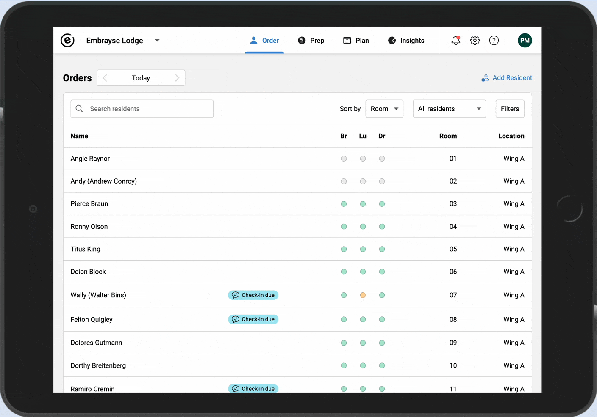
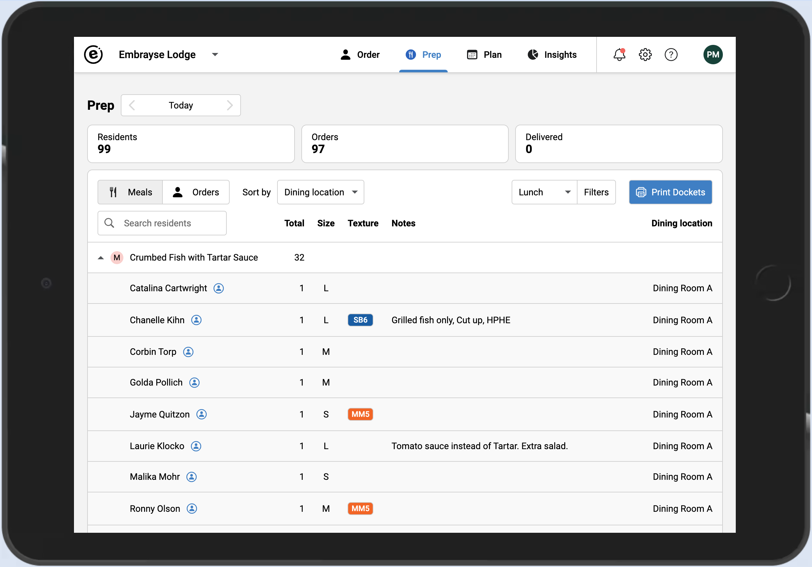
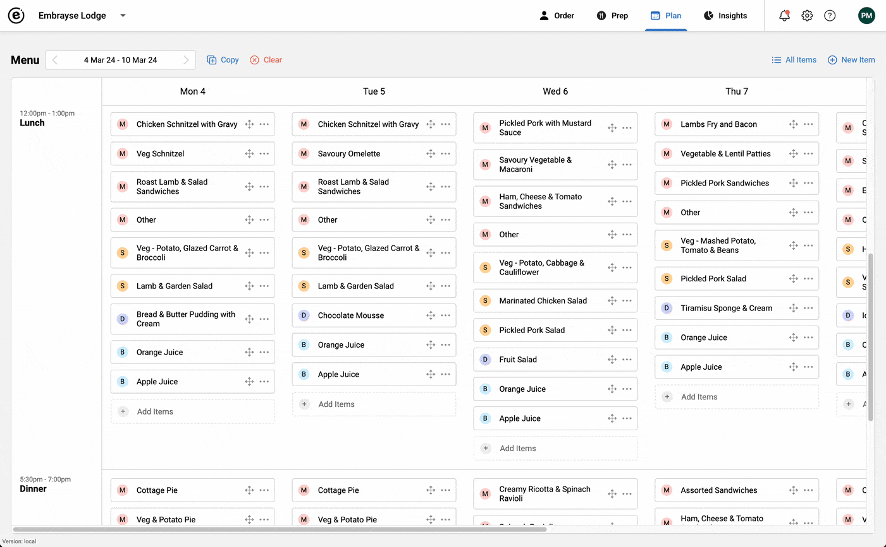
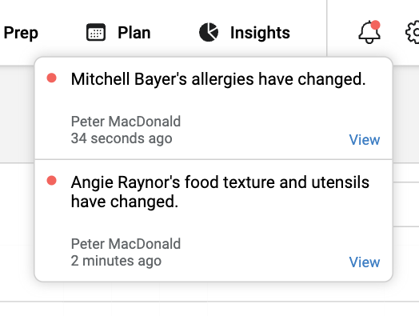

Release 2024.1 – API, multi-site support, UI improvements and more
We are starting off the year with a number of big changes which we are very excited to share with you. You may have noticed some of them before, but we go into some detail here.
New API
At Embrayse we are dedicated to transparency and ensuring that as custodians of your data, we give you easy and secure access to it. Our newly designed RESTful API is a big step in this direction. You can now quickly and securely access all your data, including resident profiles, menus and meals, orders, resident feedback, and more. Additionally you can create, update, and archive residents using the API. This functionality will open up many possibilities for reporting and analytics, integrations, and custom resident admission processes. You can learn more about the API and access reference information on our knowledge base. If you are considering using the API, reach out to us for additional guidance.
Multi-site Support
Embrayse now makes it much easier for users to operate multiple sites, using a single (SSO) account. For providers that manage multiple facilities, a user can quickly switch between them in the app header. They may be given access to all or a subset of the sites operated by the provider, and may have different permissions in each site based on their needs.

Prep Report Improvements
We have re-arranged the information on the Prep report, to make it easier to read. The count and size now appear first, followed by texture and notes, making it easier to see the important information at a glance. Additionally, to open a resident's dietary profile there is now a small icon next to the name, rather than the whole name being clickable. This minimises the chance of opening the profile accidentally when you're trying to expand/collapse the row.

Menu Item Quick Edit
Previously to modify a menu item, you either had to search for it in the menu item selector, or find it on the All Items page. You can now more quickly edit an item that is already added to the menu, by using its context menu (...)

Resident Change Notification Improvements
When a resident's details change, whether directly by a user or through integration with your clinical system, the specifics of which fields have changed are now also displayed. This will help your staff keep on top of changes.

Other Improvements and Bug Fixes
- Improved error pages and messages, including adding a better 404 (not found) page.
- Added a new and cleaner navigation menu when the app is displayed on a narrow display, for example on a tablet held in portrait mode.
- Fixed: when a resident is first created, their photo does not display.
- Fixed some intermittent performance issues.
Want to see Embrayse in action?